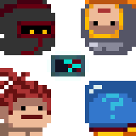

Soul Knight is a fast-paced roguelike dungeon crawler where you battle through randomly generated levels filled with enemies, traps, and loot. You start by selecting a character, each with unique abilities,
and dive into dungeons armed with a basic weapon. As you progress, you’ll find powerful guns, swords, and magic staffs, all with different effects.Enemies become tougher with each level, and you must dodge bullets,
use cover, and manage energy for weapon usage. Along the way, you’ll meet NPCs, unlock buffs, and discover hidden secrets. The goal? Defeat the dungeon boss and escape with your life!

Soul Knight is a roguelike dungeon crawler developed by the Chinese indie studio ChillyRoom. Released in 2017 for iOS and Android, the game quickly gained popularity due to its smooth controls,
engaging combat, and pixel-art aesthetic. Inspired by games like Enter the Gungeon, it features procedurally generated dungeons, hundreds of weapons, and various playable characters with unique
abilities.ChillyRoom, known for developing mobile-friendly indie games, has continuously updated Soul Knight with new content, including multiplayer modes, additional characters, and seasonal events.
The game’s success has led to spin-offs like Soul Knight Prequel, further expanding its universe.
Beyond its core gameplay, Soul Knight is packed with secrets, references, and spin-offs. In 2023, ChillyRoom released Soul Knight Prequel, an action RPG with similar aesthetics but a
more open-world experience. Both games share lore and characters, expanding the Soul Knight universe. The game also contains numerous Easter eggs, such as weapons referencing Minecraft,
DOOM, and Enter the Gungeon. Hidden NPCs and secret rooms add more surprises for players to discover. With frequent updates and collaborations, Soul Knight remains a fan-favorite among
roguelike and pixel-art game lovers.